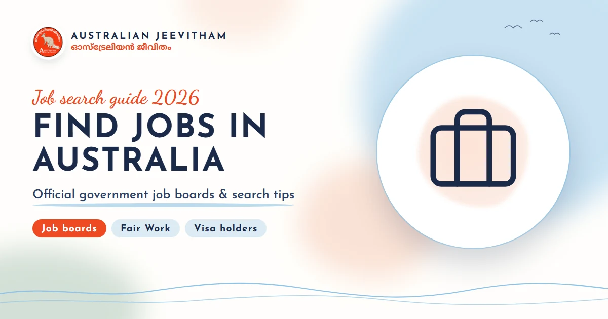
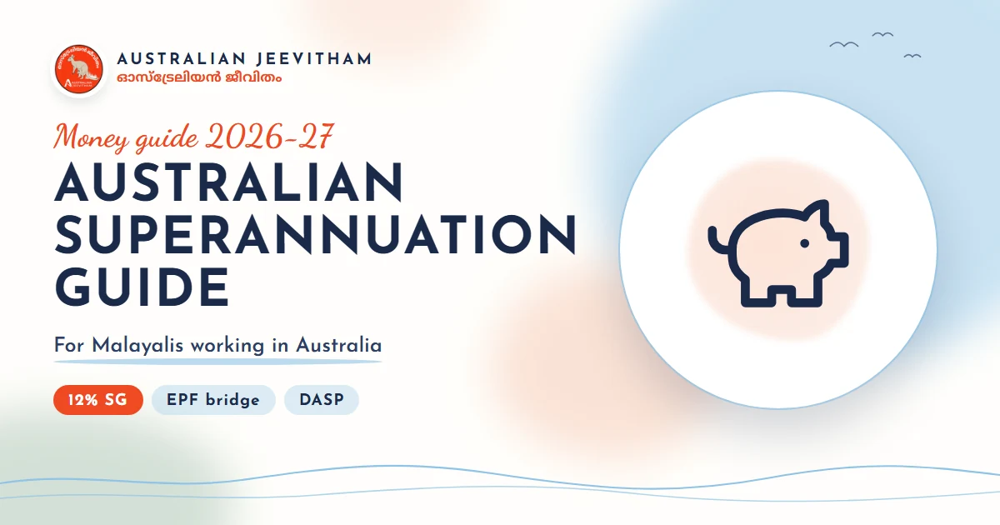
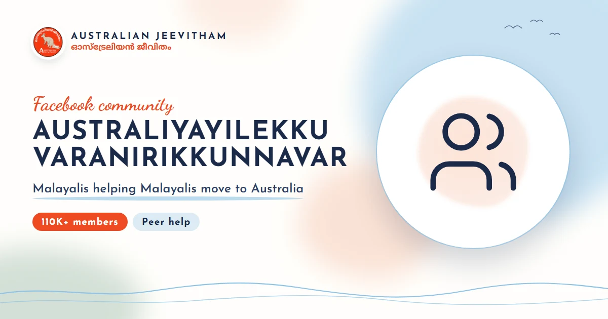
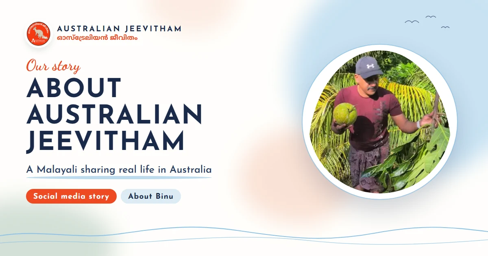
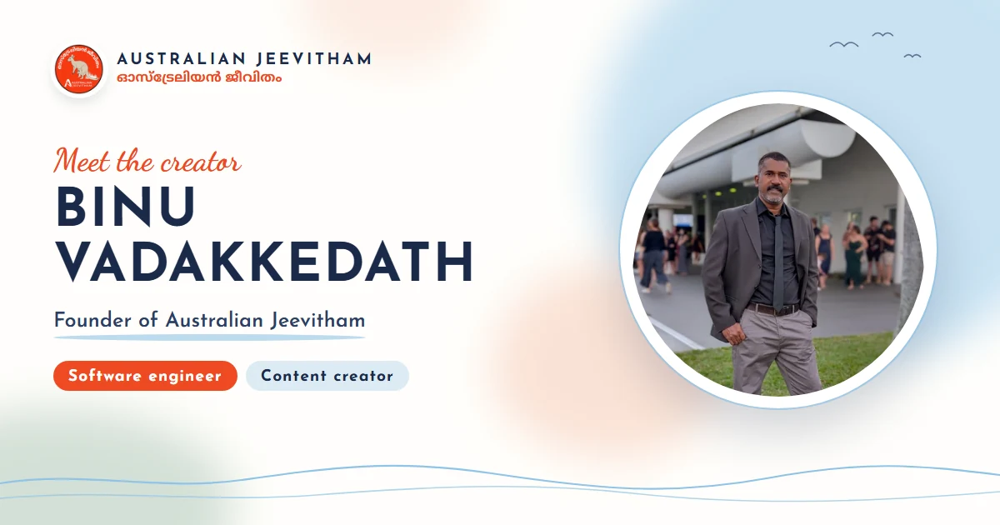
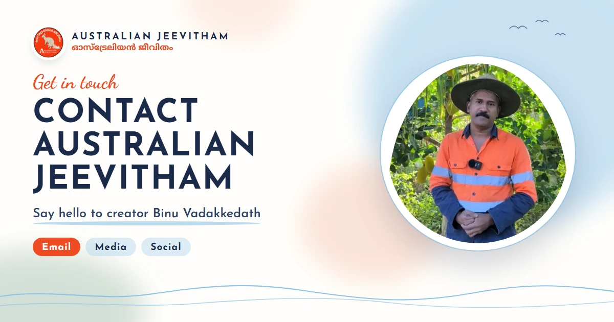

How To Migrate to Australia.
A personal, first-hand look at the paths people take to move here - arriving with a job offer, or lodging a visa independently. ഓസ്ട്രേലിയയിലേക്കു വരാനുള്ള വഴികൾ - ജോലി കിട്ടി വരാം, അല്ലെങ്കിൽ സ്വന്തമായി വിസ അപ്ലൈ ചെയ്യാം.

General information only. Visa rules and eligibility depend on your individual circumstances and can change. Always verify current requirements with the Department of Home Affairs.
Start with the pathway - not with a promise of PR
General information only: Australian Jeevitham shares publicly available information about Australian visas, migration pathways, settlement and related government processes. It does not provide migration advice or immigration assistance. Visa rules change and every case is different. Check the Department of Home Affairs. If you need immigration assistance, use a person legally authorised to provide it.
There is no single “Australia migration visa”. The right pathway depends on factors such as your occupation, age, English, qualifications, work experience, skills assessment, points, employer sponsorship, state or territory nomination, regional requirements and - for regulated professions - professional registration. ഓരോരുത്തരുടെയും qualification, ജോലി പരിചയം, English, occupation, points, sponsorship എന്നിവ അനുസരിച്ചാണ് അനുയോജ്യമായ pathway മാറുന്നത്.
By Binu Vadakkedath
Last updated: November 2026
1. Points-tested skilled migration 2. Employer-sponsored migration
Subclass 189 - Skilled Independent
A points-tested permanent skilled visa. It does not require state or employer nomination. You must satisfy the applicable occupation, skills assessment, English, points and invitation requirements.
Subclass 190 - Skilled Nominated
A points-tested permanent skilled visa requiring nomination by an Australian state or territory. Each jurisdiction can apply its own nomination criteria in addition to federal visa requirements.
Subclass 491 - Skilled Work Regional
A points-tested provisional regional visa for eligible applicants nominated by a state or territory or sponsored by an eligible family member. It allows a stay of up to five years and can provide a pathway to subclass 191 permanent residence after meeting the applicable regional visa requirements.
Subclass 482 - Skills in Demand (SID)
An employer-sponsored temporary skilled visa. Home Affairs states applicants must have the skills for the nominated occupation and generally at least 12 months of relevant work experience. Other stream, salary, English and nomination requirements can apply.
Subclass 186 - Employer Nomination Scheme
A permanent employer-sponsored visa with different streams. Requirements vary by stream; Direct Entry applicants generally require a skills assessment unless exempt, and occupational registration or licensing may also be required.
Subclass 494 - Skilled Employer Sponsored Regional (Provisional)
A five-year provisional employer-sponsored visa for designated regional Australia. Employer Sponsored stream applicants generally need three years of relevant work experience, to be under 45, Competent English and a skills assessment, unless an exemption applies. Registration or licensing may also be required.
How SkillSelect works for 189, 190 and 491
SkillSelect is the Australian Government system used to submit an Expression of Interest (EOI) for subclasses 189, 190 and 491. These visas are points-tested. The current minimum points threshold is 65 points, but Home Affairs explicitly states that meeting 65 points does not guarantee an invitation.
A typical preparation sequence is:
Check occupation → start the required skills assessment and English steps → calculate points → submit or update the EOI with available results → seek or receive nomination where applicable → wait for an invitation → lodge the visa application within the required timeframe.
The exact sequence and evidence can differ by visa, occupation, assessing authority and state or territory program. Do not treat an indicative points score as a visa approval.
Employer sponsorship is a different route
If an Australian employer wants to sponsor you for an eligible skilled role, the relevant pathway may include the 482 Skills in Demand (SID), 186 Employer Nomination Scheme or 494 Skilled Employer Sponsored Regional visa. A job vacancy by itself does not mean the employer will sponsor a visa, and sponsorship does not automatically mean permanent residence.
Labour agreements, including some industry agreements and DAMAs, can also operate through employer-sponsored visa programs under specific terms. These are employer-driven arrangements and should not be treated as a general shortcut available to every applicant. One example is the Aged Care Industry Labour Agreement, which is explained in our Aged Care & Trades Pathways guide.
Skills assessment, registration and a visa are not the same thing
Many skilled migration pathways require a skills assessment from the authority specified for the occupation. Regulated professions can also have a separate Australian registration or licensing process. For example, nursing, pharmacy and some other professions have professional requirements separate from the migration visa process. Other occupations follow a similar pattern: overseas physiotherapists use a separate Australian Physiotherapy Council (APC) pathway, Medical Laboratory Scientists go through an AIMS assessment, and many trade occupations are assessed by Trades Recognition Australia (TRA).
Professional registration ≠ migration skills assessment ≠ visa grant ≠ job offer. Completing one process does not guarantee the others.
🩺 Nursing
AHPRA/NMBA registration, streamlined IQRN pathways, Stream B OBA, NCLEX-RN, OSCE and ANMAC.
💊 Pharmacy
APC eligibility, OPRA, supervised practice, AHPRA registration and migration assessment information.
🤝 Social Work
AASW skills assessment, qualification, field education and English requirements.
For applicants from Kerala or elsewhere overseas
Do not resign from a job, pay large relocation costs, sell property or make irreversible plans merely because your occupation appears on a list, you have 65 points, an agent says your profile is “eligible”, or you have completed professional registration. Verify the actual visa criteria, nomination or sponsorship requirements and the status of your application.
State nomination criteria, occupation availability, invitation competitiveness and employer demand can change. Always use current official sources rather than screenshots, old videos or social-media claims.
Moving from India with your family: the steps in order
Most Kerala families who move on a skilled visa follow the same order. Each step links to a page on this site that explains it in more detail.
- Check your occupation. Find out whether your job is on the skilled occupation list for the visa you want, and which authority assesses it. Our guides cover nursing (Ahpra), pharmacists, medical laboratory scientists (AIMS), social workers (AASW), physiotherapists and trades.
- Take an English test. IELTS, PTE Academic, OET and other tests are accepted. Higher scores add more points, so many people sit the test more than once.
- Get your skills assessment. Apply to the assessing authority for your occupation. This can take weeks or months, so start early.
- Count your points. Use our PR points calculator to see your score for subclass 189, 190 and 491. The NAATI CCL test in Malayalam can add 5 points.
- Choose your route. Lodge an Expression of Interest in SkillSelect and look at state nomination (see 190 vs 491), or look for an employer who will sponsor you (see jobs in Australia and our nursing jobs with visa sponsorship).
- Plan the money. Add up visa fees, tests, medicals, flights and the rental bond with our visa and moving cost estimator, and compare rents with the cost of living calculator.
- After the visa is granted. Use our first 30 days checklist, renting guide, school admissions guide and driving licence guide.
Can my family come with me?
For most skilled and employer-sponsored visas, your partner and dependent children can be included in the same application. Each family member adds to the visa charge. Family members aged 18 or over who do not have functional English may have to pay a second instalment before the visa is granted. Your partner can also add points: 10 points if your partner has a skills assessment and Competent English, or 5 points for Competent English alone.
How long does it take to get PR in Australia?
There is no fixed time. It depends on three stages: your skills assessment, the wait for an invitation after you lodge your Expression of Interest, and the visa processing time. The invitation wait is the hardest to predict. Some people are invited quickly and some are never invited, because the highest scores in each occupation are invited first. Home Affairs publishes current processing times on its visa processing times page.
My personal overview of moving to Australia
This Malayalam video was published in April 2025 and explains the topic from a personal perspective. Use the updated written information on this page and current Home Affairs sources for visa rules. ഈ വീഡിയോ വ്യക്തിപരമായ അനുഭവത്തിന്റെ അടിസ്ഥാനത്തിലുള്ള ഒരു overview ആണ്. നിലവിലെ visa rules അറിയാൻ ഈ പേജിലെ updated വിവരങ്ങളും Home Affairs website-ഉം പരിശോധിക്കുക.

Who can help with a visa application?
Home Affairs says that if you appoint someone to provide immigration assistance, that person must be a registered migration agent, an Australian legal practitioner, or an exempt person. If you want professional help, verify the person's authority before paying for immigration assistance.
Frequently asked questions
Is 65 points enough to get an Australian skilled visa?
65 is the minimum points threshold for subclasses 189, 190 and 491, but it does not guarantee an invitation.
Do I need a job offer to migrate to Australia?
Not for every pathway. Subclass 189 does not require employer sponsorship, while employer-sponsored visas such as 482, 186 and 494 depend on an employer and the relevant nomination or sponsorship requirements.
Do I need a skills assessment before submitting a SkillSelect EOI?
Most applicants should arrange their skills assessment early and include the details in their EOI when available. The exact timing and validity requirements depend on the visa subclass and assessing authority, so check the rules that apply to your pathway.
Does professional registration guarantee a visa or job?
No. Registration, migration skills assessment, visa eligibility and employment are separate processes.
Who can provide immigration assistance in Australia?
Home Affairs says an appointed person providing immigration assistance must be a registered migration agent, an Australian legal practitioner, or an exempt person.
What does PR mean in Australia?
PR means permanent residence. A permanent visa lets you live, work and study in Australia without a time limit and enrol in Medicare. Travel in and out is allowed for five years from the grant. After meeting the residence requirement, you can apply for Australian citizenship.
Is it easy to get PR in Australia?
It depends on your occupation, age, English score and points. Reaching 65 points lets you lodge an Expression of Interest, but many occupations need much higher scores for an invitation. Employer sponsorship and state nomination are other routes.
Can I take my family when I migrate to Australia?
For most skilled and employer-sponsored visas, yes. Your partner and dependent children can usually be included in the same visa application, and each person adds to the cost.
Official Australian Government resources
SkillSelect · Expression of Interest · Regional visas · Sponsored skilled visa options · Who can help
Beyond the visa - jobs, community & life here

Find Jobs in Australia
SEEK, Workforce Australia, and all eight state and territory government career sites - plus work-rights information and scam warnings.
- SEEK & Gov Portals
- Work Rights
- Scam Warnings

Superannuation Guide
12% SG rate, Payday Super, EPF/PF comparison, choosing and consolidating funds, and DASP for eligible former temporary residents.
- 12% SG Rate
- EPF vs Super
- DASP

Facebook Community Group
Join 110,000+ Malayalis sharing first-hand advice, verifying genuine job offers, and helping newcomers settle in Australia.
- 110K+ Members
- Community
- Peer Help

Our Story
Why Binu started sharing authentic Australian life, settlement guides, and jobs with the global Malayali community, from a backyard in Queensland.
- First-Hand
- Independent
- Queensland

Meet the Creator
A Malayali living in Queensland documenting real Australian life - gardening, jobs, migration, and everyday moments.
- 130K+ Subscribers
- Silver Creator Award
- Queensland

Contact Us
Get in touch with Australian Jeevitham and Binu Vadakkedath by email or social media for questions, enquiries, or feedback.
- Social DM
- Get in Touch